1. shallowwaterfoamで跳水を解いた話
2. 自己紹介
- さんのみや
- 道路設計CADの会社でSE（Web系エンジニア）
- OpenFOAMをよく使う
- 開水路流れのシミュレーションがメイン
3. 目次
- 数値解析で実現したいこと
- 前回の内容
- 底面摩擦項について
- 浅水流方程式の乱流モデルについて
- shallowWaterFoamで跳水を解いてみた
- 跳水について
- 目的：shallowWaterFoamの結果を跳水の理論式と比較したい
- 計算条件
- 計算結果
- 考察
- 実践編：自宅で水理実験
4. 数値解析で実現したいこと
| 道路法面の模式図 | 開水路流れのネットワーク解析 |
 |
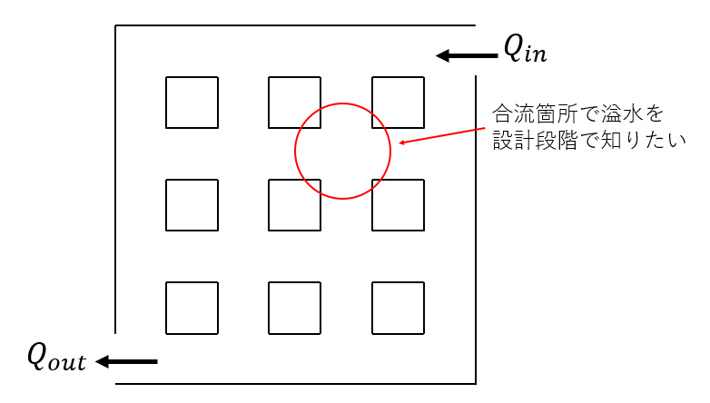 |
5. 前回の内容
- 浅水流方程式（平面2次元）とは，鉛直方向に水深積分した基礎方程式
- 次の予定：①shallowwaterfoamに底面摩擦項を加えて改良，②乱流モデルの追加
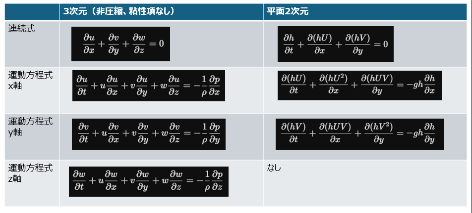
図1: 3次元と平面二次元の連続式と運動方程式
6. 底面摩擦項について
| 連続式 | 運動方程式x方向 |
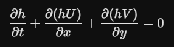 |
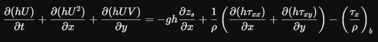 |
- 底面摩擦項（マニング則を用いる場合）
- x軸方向
\[\left( \frac{\tau_x}{\rho} \right)_b = \frac{gn^2 U \sqrt{U^2 + V^2}}{h^{4/3}}\]
- y軸方向
\[\left( \frac{\tau_y}{\rho} \right)_b = \frac{gn^2 V \sqrt{U^2 + V^2}}{h^{4/3}}\]
- 底面摩擦項（表面摩擦係数 \(C_f\) を用いる場合）
- x軸方向
\[\left( \frac{\tau_x}{\rho} \right)_b = \frac{1}{2} C_f U \sqrt{U^2 + V^2}\]
- y軸方向
\[\left( \frac{\tau_y}{\rho} \right)_b = \frac{1}{2} C_f V \sqrt{U^2 + V^2}\]
7. 浅水流方程式の乱流モデルについて
- さらっと説明します．
- 河川のiRICのドキュメントより引用
- https://i-ric.org/webadmin/wp-content/uploads/2023/06/Nays2DH_SolverManual_Japanese_v4.pdf
- 渦動粘性係数をどのように計算するかの話
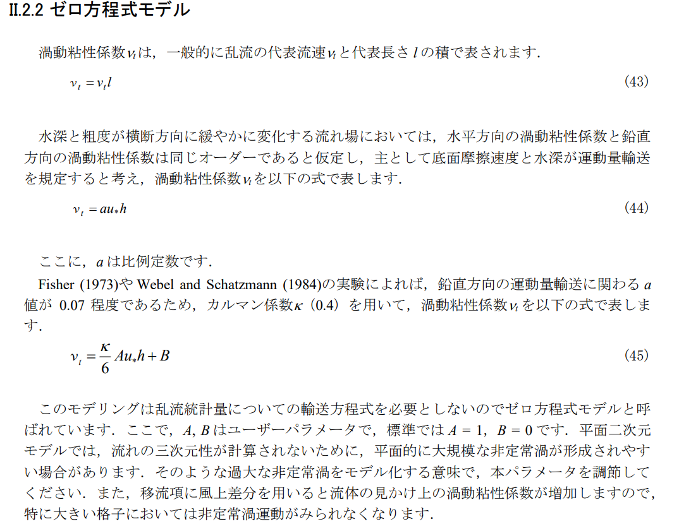
図2: 水深積分したゼロ方程式モデル
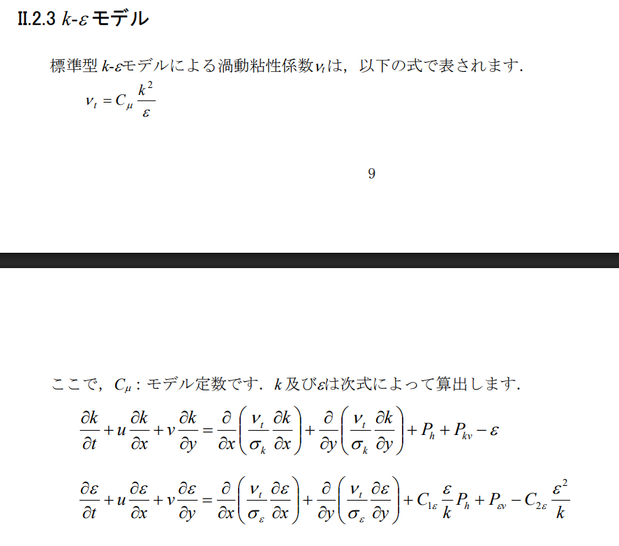
図3: 水深積分したk-epsilonモデル
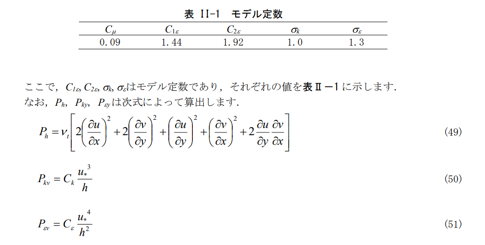
図4: 水深積分したk-epsilonモデル
8. shallowWaterFoamで跳水を解く前に跳水について
- 跳水の簡単な説明：
- 水深が浅くて速い流れが，水深が深くて遅い流れに遷移する
- フルード数Fr<1:常流，Fr>1:射流
- 跳水の発生箇所で渦が発生し，流線が不連続になる（ベルヌーイの定理が適用できない．）．
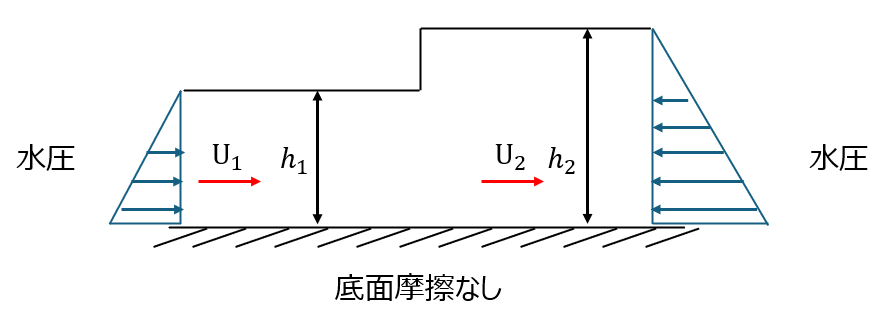
図5: 跳水の模式図
- たとえば流し台の円形跳水
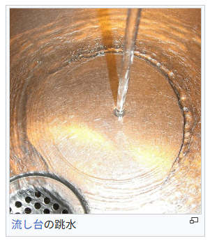
図6: 流し台の円形跳水
9. 目的：shallowWaterFoamの結果を跳水の理論式と比較したい
支配方程式： \[\frac{\partial}{\partial t}(h\mathbf{u}) + \nabla \cdot (h\mathbf{u}^T\mathbf{u}) + f \times h\mathbf{u} = -\vert{}\mathbf{g}\vert{}h\nabla(h + h_0)\]
- 時間変化なし（定常状態）： \(\frac{\partial}{\partial t}(h\mathbf{u}) \rightarrow 0\)
- 実験室スケール（コリオリ力無視）： \(f \times h\mathbf{u} \rightarrow 0\)
- 水平な水路（障害物高さなし）： \(\nabla h_0 \rightarrow 0\)
- 1次元方向（X方向）のみ考える： \(\nabla \rightarrow \frac{d}{dx}\) , \(\mathbf{u} \rightarrow U\)
\[\frac{d}{dx}(h U^2) = -g h \frac{dh}{dx}\]
\[\frac{d}{dx} \left( h U^2 + \frac{1}{2} g h^2 \right) = 0\]
10. 跳水の理論式のざっくりとした説明
図7: 跳水の模式図
支配方程式をシンプルな形にしたもの \[\frac{d}{dx} \left( h U^2 + \frac{1}{2} g h^2 \right) = 0\]
上式を積分すると，上流（跳水前，添字1）と下流（跳水後，添字2）で以下の関係が成り立つ
\[h_1 U_1^2 + \frac{1}{2} g h_1^2 = h_2 U_2^2 + \frac{1}{2} g h_2^2 = \text{一定}\]
上式をフルード数Frを使って表現すると，共役水深（h1,h2）の公式となる．
\[h_2 = \frac{h_1}{2} \left( \sqrt{1 + 8 Fr_1^2} - 1 \right)\]
さらに導出は省くが，上式とベルヌーイの定理を用いて跳水後のエネルギー損失Eの理論式を導出できる．
\[\Delta E = \frac{(h_2 - h_1)^3}{4 h_1 h_2}\]
11. 計算条件
- x軸方向のみの1次元流れ解析
- メッシュサイズ5cm(5m/100分割)
- 入口水深のフルード数は，約1.3
- シミュレーション時間：300s
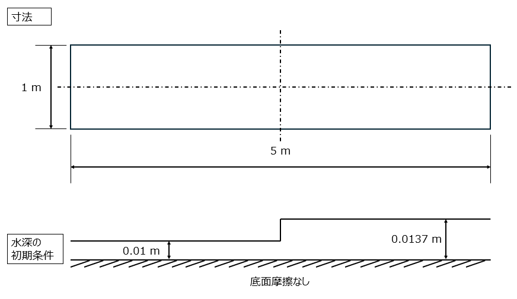
図8: 寸法と初期流れ場（初期水深）
| inlet | outlet | sides | |
| h | 0.01 | 0.01375 | zeroGradient |
| hU | 0.004 | zeroGradient | slip |
| hTotal | 0.01 | 0.01 | 0.01 |
12. 計算結果
- 上流側と下流側の水深を固定にして，不連続な流れ場の跳水の流れ場を再現
- 数値振動は2次精度の数値スキームによるもの
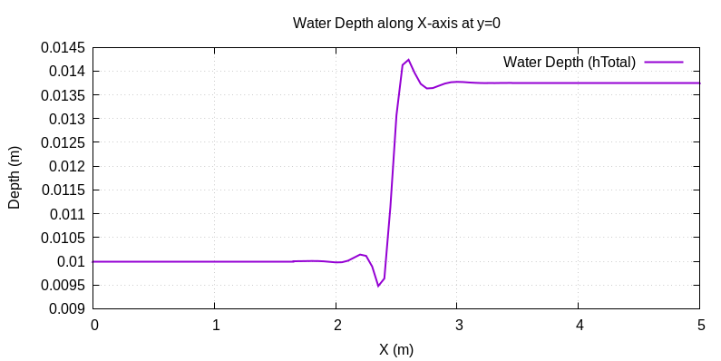
図9: 水深分布
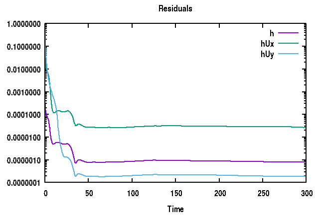
図10: 数値スキームLust unの残差
13. 考察
- 共役水深の一致
- エネルギー損失の算出
- h1=0.01,h2=0.01375
\[\Delta E = \frac{(h_2 - h_1)^3}{4 h_1 h_2}=0.000096 m\]
- 理論エネルギー損失: 0.000096 m(約0.096 mm)
- shallowWaterFoamでは，hUとhを計算しているので，この値を使ってエネルギー損失を求める．
- 比エネルギー \(E\) の定義式は以下の通り
\[E = h + \frac{U^2}{2g} = h + \frac{(hU)^2}{2g h^2}\]
- hUとhを使って求めたエネルギー損失：9.73e-05 m
- 相対誤差(0.0000973-0.000096)/0.000096=0.0135(約1.4%と意外と大きい印象)
- この誤差は数値スキームによるものだと考えられるので，数値スキームを変更することで相対誤差を減らすことができると考える．
14. 数値スキーム
ddtSchemes
{
default CrankNicolson 0.9;
}
gradSchemes
{
default Gauss linear;
}
divSchemes
{
default none;
div(phiv,hU) Gauss LUST un;#これを「Gauss vanLeer」に変更する．
}
laplacianSchemes
{
default Gauss linear uncorrected;
}
interpolationSchemes
{
default linear;
}
snGradSchemes
{
default uncorrected;
}
15. 数値スキーム違いで比較してみる
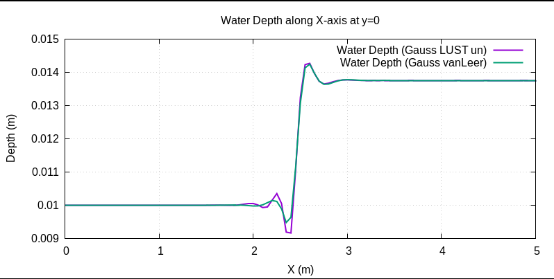
図11: LUST un とVanLeerの違い
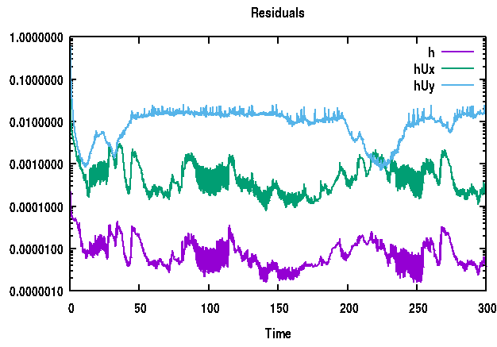
図12: 数値スキームVanLeerの場合の残差
16. エネルギー損失の比較
- やはり二次精度の数値スキームで数値振動を抑え込むことで，誤差を低減させることができた．
| LUST unエネルギー損失 | vanLeerエネルギー損失 |
| 9.73e-05 m | 9.63e-05 m |
| 相対誤差 1.4％ | 相対誤差0.31% |
17. 実践編：自宅水理実験の試行錯誤と課題（予備実験）
- モノづくりのアドバイスください
- 接着の実験（水漏れがないか確認）
- 使用した材料
- 木材の端材（長さ100mm程度，厚さ15mm程度）
- 厚さ1mmの透明な塩ビ板
- 接着剤はエポキシ系
- 接着は，水路側面をクランプで力を加えた状態で1時間ほど放置
- 手洗い場で水道から水をタンクに貯めて，噴流が出るのか確認
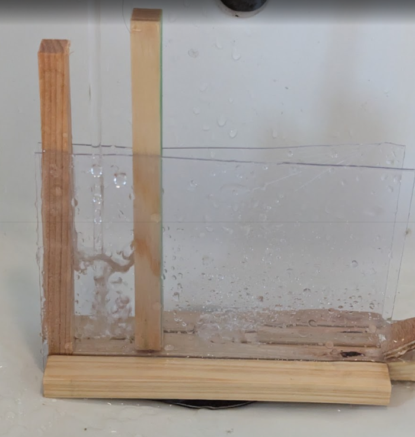
図13: 水漏れがないかの予備実験
18. 実践編：比較的大きなサイズで流量も増やして実験
- 水路高さ600mm，全体水路長さ900mm
- 風呂場のポンプ（10L/minと言われているが，まだ未測定）
- 厚さ1mmの透明な塩ビ板
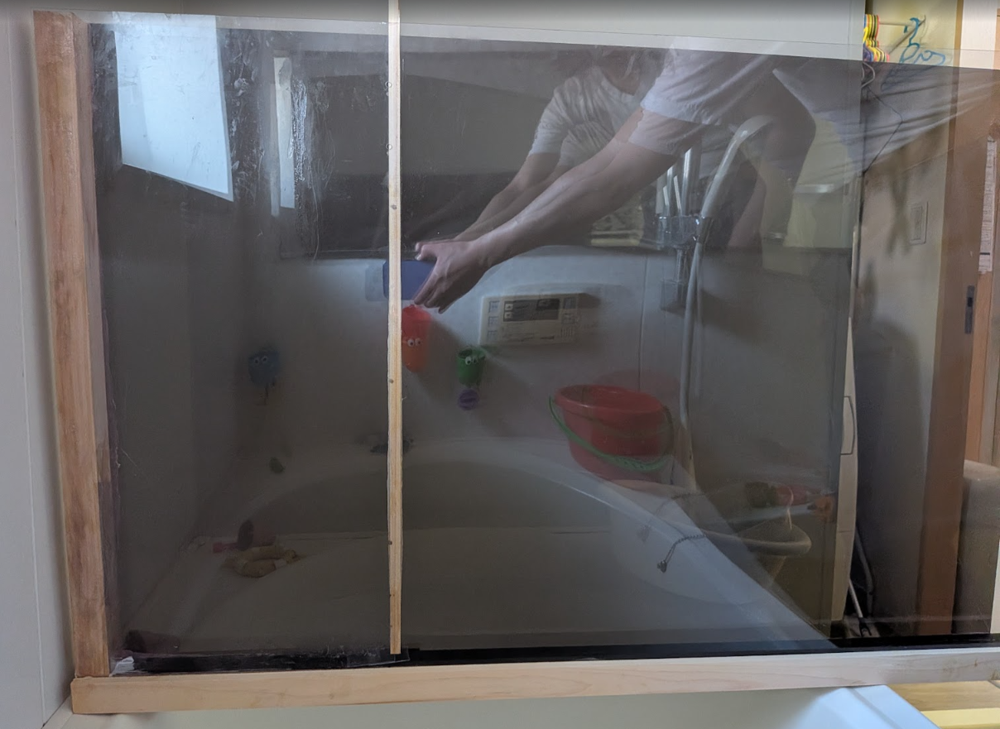
図14: 実験水路の全体像
19. 実践編：接合部で水漏れ発生（実験中止）
- 流量や水深を測定すれば，定量的な実験となる．
- 水漏れがあちこちで発生し，測定が難しいため実験を断念
- 再度作り直す予定
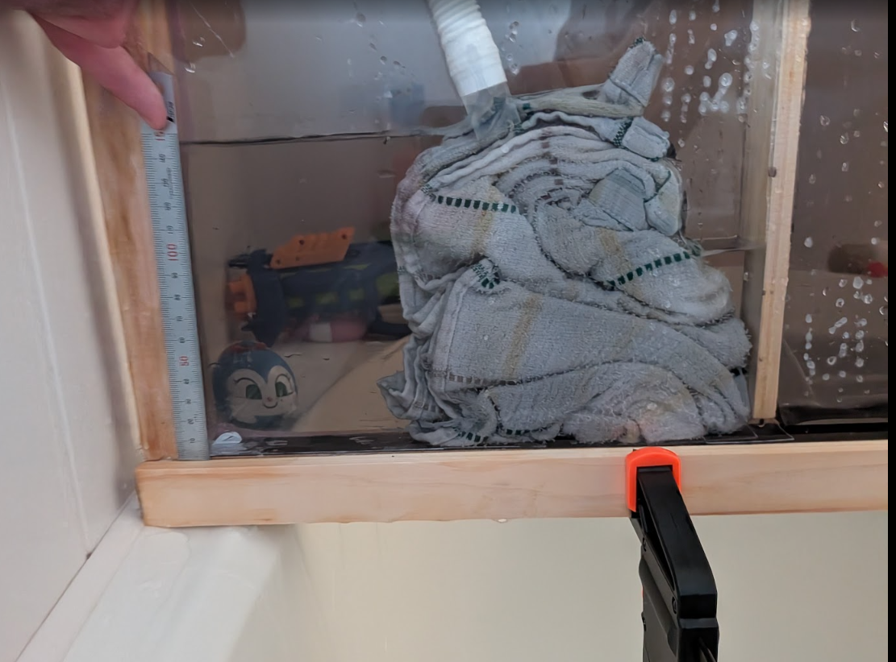
図15: タオルという抵抗体をいれてタンク内の水の流速を下げる方針
20. 結論
- 前回の宿題の底面摩擦と乱流モデルは理論だけ勉強，実装はまた今後考える
- 跳水をshallowWaterFoamで解き，適切な数値スキームを用いることで相対誤差を抑えることができる．
- メッシュサイズを変えた場合の計算も行い，更に誤差低減できるかも確認する
- 実験は水漏れを防ぐ実験水路を再度作成する（ステンレス，ゴムパッキン，アクリル板，ネジ固定とか）．